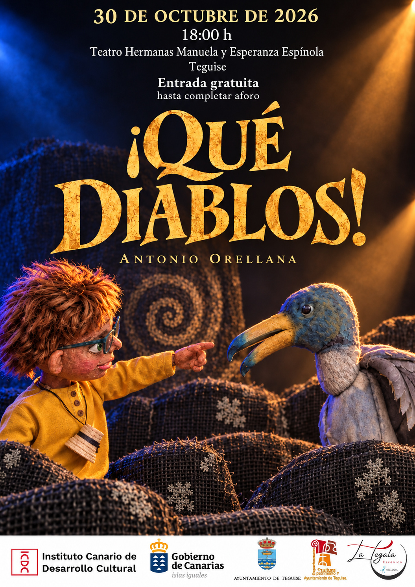

↓
Cartel y material gráfico oficial del espectáculo. Cada recurso disponible puede ampliarse o descargarse.
Equipo artístico
Manipuladores de marionetas y actores
Fefa Toledo · Ilona Yavorskaya · Agustín Salvago · J. Carlos Sánchez
Ayudantía de dirección
Fefa Toledo
Dramaturgia y dirección
Antonio D. Orellana
Equipo técnico
Marionetas · José A. Reguera · Paco Orejón Valentí
Máscaras · Agustín Salvago
Atrezzo / escenografía · Antonio Orellana
Coreografía · Ilona Yavorskaya
Diseño sonoro · IA generation · recursos libres
Vestuario · Yolanda Arriaga · Mª Antonia Landa
Iluminación y técnico en gira · Antonio D. Orellana
Vídeo de acogida · Julio Herrera
Fotografía · José David García
Producción ejecutiva y distribución · LA TEGALA ESCÉNICA
¿Quieres programar ¡Qué Diablos!?
Teatros · festivales · programación familiar · campañas escolares